| Designing Precision Flexures for Real-World Hardware | |||
| Written by: Caleb Adams | |||
| 18.345 Project, MIT |
| Designing Precision Flexures for Real-World Hardware | |||
| Written by: Caleb Adams | |||
| 18.345 Project, MIT |
Lathes are a common machining tool and are used in a variety of contexts, from hobby machining to precision manufacturing (See Fig. 1) [1]. Within the design of a lathe, there are many machine elements that need precise modelling for the accurate function of the final machine, including the dancing queen, bearings, shaft, and many more besides [1]. One such critical element is the carriage rail flexure (CRF). This machine element is critical to the design and proper function of the lathe as it prevents over constraint of the carriage. As such, this must be modelled accurately to allow movement in certain degrees of freedom (DOF), such as θz, whilst correcting for misalignment along the carriage rail, resisting fatigue failure, and maintaining sufficient stiffness in 𝑦 [2].
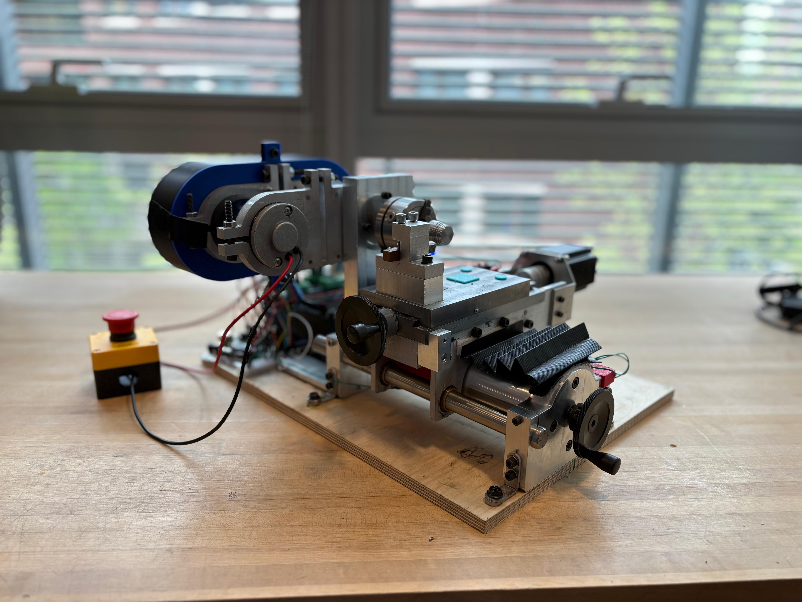
The CRF in this context refers to the blade flexure found on one side of the lathe that connects the carriage to the guide rail (See Fig. 2). On the other side of the lathe, the carriage is connected to the guide rods by two rigid guides. These linkages (on both sides) allow for the carriage to move linearly in the z-axis whilst maintaining high stiffness in all other DOFs (e.g. θy). These linkages, connect to the guide rod through brass bushings which act as a sliding bearings that are designed to reduce wear and input torque required during the motion of the carriage.
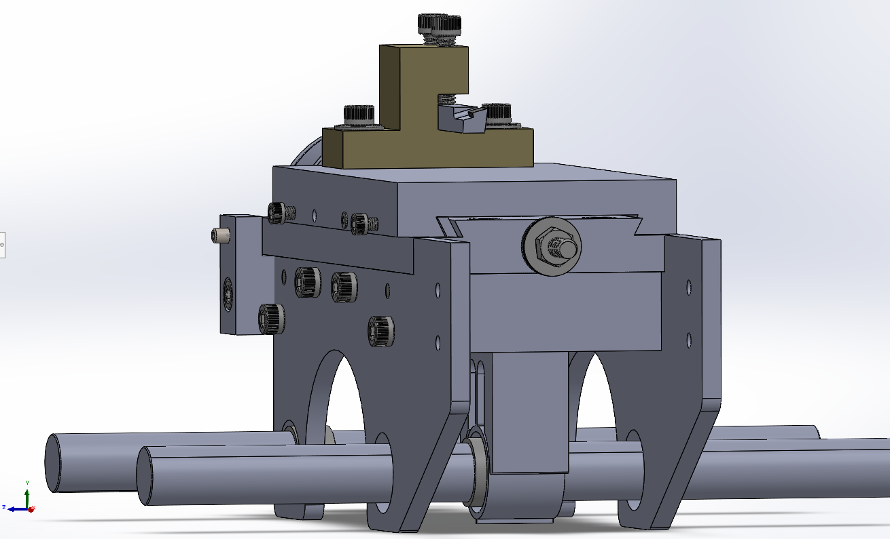
There has been significant prior literature on the modelling and design of such flexures [2][3][4][5]. However, for the purposes of this project we will begin, not with a summary of the surrounding literature, but with a detailed description of the problem at hand. Then with a clear understanding of the problem, we will derive the relevant beam bending equations and internal stress relations from first principles using the relevant literature. From these equations we will have relationships between flexure thickness, stiffness, and internal stress state. This will allow us to determine the thickness of the flexure such that it is machinable and meets our design requirements.
For the purpose of this assignment we must define a few important parameters. These parameters are; the forces and moments acting on the CRF, the constraint layout, and material properties. First, we define the material properties of the system. The CRF (and all other components considered) are made of Aluminium 6061 [6]. It's pertinent material properties are: σUTS = 310 MPa, σY = 276 MPa, σfatigue = 96.5 MPa, E = 68.9 GPa, and ν = 0.33. Now we define the load case for the CRF using a free body diagram (FBD).
To determine the forces and moments acting on the CRF, a free body diagram (FBD) of the carriage is constructed. The carriage experiences three cutting forces at the tool tip: \(F_\text{cut}\) acting in the \(-y\) direction, \(F_\text{tan}\) acting in the \(-x\) direction, and \(F_\text{axial}\) acting in the \(+z\) direction. These are resisted by the CRF and the two side skirt bushing interfaces, which provide radial reaction forces. It is assumed that any \(x\)-direction force seen by the CRF is negligible relative to the side skirts, which are far stiffer in that direction. The relevant geometry is defined by dimensions \(a\), \(b\), \(c\), \(d\), \(e\), and \(f\), described in Table 1 and illustrated in Fig. 3.
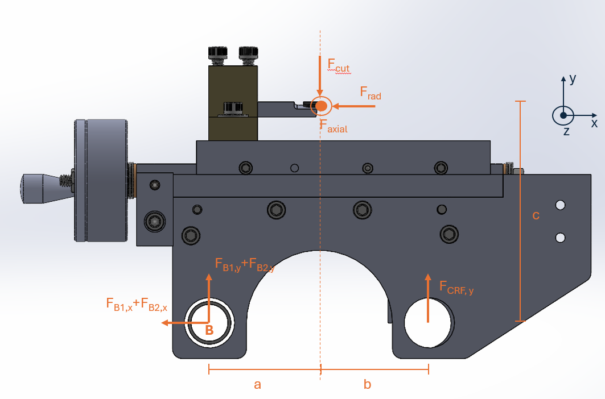
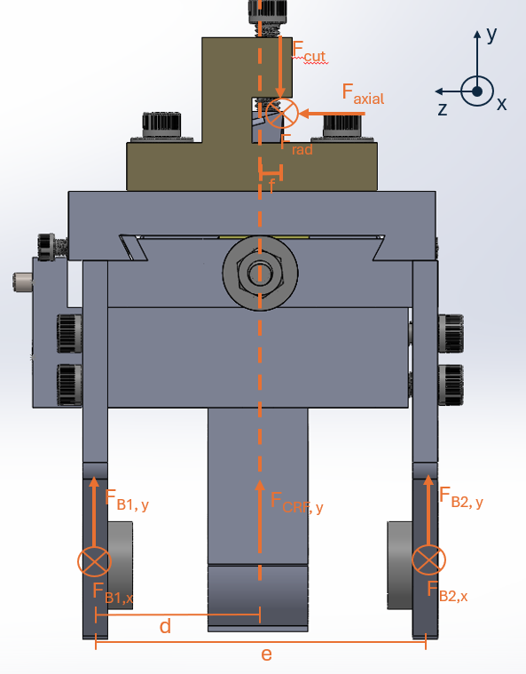
| Parameter | Description |
|---|---|
| \(a\) | Dovetail travel; \(x\)-distance of tool tip from left side skirt, \(a = \ell\theta / 2\pi\); \(0\leq a \leq 51\) mm |
| \(b\) | Remaining carriage span to right side skirt; \(b = (a+b)_\text{total} - a\) |
| \(c\) | Height of tool tip above guide rod centreline |
| \(d\) | \(z\)-distance from CRF to the nearest side skirt |
| \(e\) | \(z\)-distance between the two side skirts |
| \(f\) | Fixed \(x\)-offset of tool tip from dovetail centreline |
| \(\ell\) | Lead screw lead |
| \(\theta\) | Lead screw handle rotation, \(\theta \geq 0\) |
Applying static equilibrium to the carriage (\(\sum F=m\frac{d^2x}{dt^2} = 0\)), the five equilibrium equations are as follows. Note that the z-direction force balance is omitted as that force is provided by the lead screw.
\begin{align*} \sum F_y &= 0=F_{y,1} + F_{y,2} + F_{y,\text{CRF}} - F_\text{cut} \\ \sum F_x &= 0=-F_{x,1} - F_{x,2} - F_\text{rad} \\ \sum M_x &= 0= -F_\text{cut}(f + d) + F_{y,\text{CRF}} \cdot d + F_{y,1} \cdot e + F_\text{axial} \cdot c \\ \sum M_y &= 0= F_{x,1} \cdot e + F_\text{rad}(d + f) - F_\text{axial} \cdot a \\ \sum M_{z,B} &= 0= F_{y,\text{CRF}}(a + b) - F_\text{cut} \cdot a + F_\text{axial} \cdot c \end{align*}The system comprises five equations and five unknowns: \(F_{y,\text{CRF}}\), \(F_{y,1}\), \(F_{y,2}\), \(F_{x,1}\), and \(F_{x,2}\). Equation~(5) decouples, giving \(F_{y,\text{CRF}}\) without requiring the other unknowns:
\begin{equation} \boxed{F_{y,\text{CRF}} = \frac{F_\text{cut} \cdot a - F_\text{rad} \cdot c}{a + b}} \label{eq:Fy_CRF} \end{equation}See Appendix A.2 for full derivation. But using stiffness modelling the x-direction force can be nominally given by \(F_x=0.27\times F_{rad}\).
A basic and complete derivation of Timoshenko beam bending can be found in Appendix A.1. The critical mathematical derivation is outlined below. The following assumptions are made during the derivation:
This derivation draws heavily from the work of [4] as this isn't an entirely novel derivation rather a novel application. Consider a simple beam subject to an external distributed force vector \(\vec{f}(x)\) and an external distributed moment vector \(\vec{m}(x)\) per unit length. As a consequence, internal forces and moments arise in the cross section. See Fig. 4 for a visualisation of this.
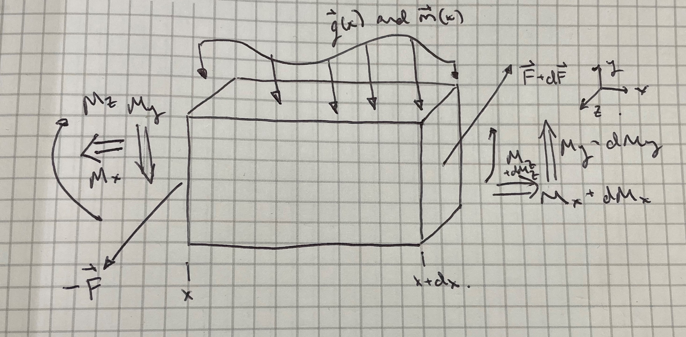
Applying force equilibrium and moment equilibrium to the beam element in Fig. 4 we get the following:
\begin{align*} -\vec{F} + \vec{F} + d\vec{F} + \vec{f}\,dx = 0 \quad &\Rightarrow \quad \frac{d\vec{F}}{dx} + \vec{f} = 0, \\[6pt] -\vec{M} + \vec{M} + d\vec{M} + \hat{i}\,dx \times (\vec{F} + d\vec{F}) + \vec{m}\,dx = 0 \quad &\Rightarrow \quad \frac{\partial \vec{M}}{\partial x} + \hat{i} \times \vec{F} + \vec{m} = 0. \end{align*}The forces and moments are related to the stresses on the cross-section by integration over the cross-section:
\begin{align*} F_x &= \int_A \sigma_{xx}\,dA, \quad F_y = \int_A \sigma_{xy}\,dA, \quad F_z = \int_A \sigma_{xz}\,dA, \\[4pt] M_x &= \int_A \!\left(\sigma_{xz}\,y - \sigma_{xy}\,z\right)dA, \quad M_y = \int_A z\,\sigma_{xx}\,dA, \quad M_z = -\!\int_A y\,\sigma_{xx}\,dA. \end{align*}Where the stress state at a point on the beam is described by a symmetric positive definite stress tensor.
\[ \boldsymbol{\sigma} = \begin{bmatrix} \sigma_{xx} & \sigma_{yx} & \sigma_{zx} \\ \sigma_{xy} & \sigma_{yy} & \sigma_{zy} \\ \sigma_{xz} & \sigma_{yz} & \sigma_{zz} \end{bmatrix}, \]As with all rigid bodies, the deformed position of each beam cross-section is uniquely described by a translation and rotation vector: \(\vec{w}(x) = (w_x,\,w_y,\,w_z)^T\) and \(\vec{\theta}(x) = (\theta_x,\,\theta_y,\,\theta_z)^T\). The displacement of a point is thus:
\begin{align*} u_x(x,y,z) &= w_x + z\theta_y - y\theta_z, \\ u_y(x,y,z) &= w_y - z\theta_x, \\ u_z(x,y,z) &= w_z + y\theta_x. \end{align*}Differentiating the above relations gives us the three relevant strain relationships.
\begin{align*} \varepsilon_{xx} &= \frac{\partial u_x}{\partial x} = \frac{\partial w_x}{\partial x} + z\frac{\partial\theta_y}{\partial x} - y\frac{\partial\theta_z}{\partial x}, \\[4pt] \gamma_{xy} &= \frac{\partial u_x}{\partial y} + \frac{\partial u_y}{\partial x} = \frac{\partial w_y}{\partial x} - \theta_z + \left(\frac{\partial\omega}{\partial y} - z\right) \frac{\partial\theta_x}{\partial x}, \\[4pt] \gamma_{xz} &= \frac{\partial u_x}{\partial z} + \frac{\partial u_z}{\partial x} = \frac{\partial w_z}{\partial x} + \theta_y + \left(\frac{\partial\omega}{\partial z} + y\right) \frac{\partial\theta_x}{\partial x}, \end{align*}where \(\omega(y,z)\) is the St. Venant warping function [4], which appears for non-circular cross-sections under torsion. Note that we don't have any torsion in our case as per Assumption 7.
The internal virtual work per unit length of the beam is given by the below equation.
\begin{equation} \delta w = F\,\delta\varepsilon + F_y\,\delta\gamma_{y} + F_z\,\delta\gamma_{z} + M_y\,\delta\kappa_y + M_z\,\delta\kappa_z = \vec{\sigma}^T\,\delta\vec{\varepsilon}, \label{eq:virt_work} \end{equation}Thus, the stress vector is \(\vec{\sigma} = (N,\,F_y,\,F_z,\,M_y,\,M_z)^T\) and the strain vector is:
\begin{equation} \vec{\varepsilon}(x) = \begin{pmatrix} \varepsilon \\[2pt] \gamma_{y} \\[2pt] \gamma_{z} \\[2pt] \kappa_y \\[2pt] \kappa_z \end{pmatrix} = \begin{pmatrix} \partial_x w_x \\[2pt] \partial_x w_y - \theta_z \\[2pt] \partial_x w_z + \theta_y \\[2pt] \partial_x \theta_y \\[2pt] \partial_x \theta_z \end{pmatrix}, \label{eq:eps_vec} \end{equation}Noting that \(\kappa_y\), \(\kappa_z\) are the bending curvatures about the \(y\)- and \(z\)-axes respectively. The curvature terms arise from the radius-of-curvature geometry of the deformed beam axis, as shown in Appendix A.3.
Substituting the constitutive relations into the stress definitions gives six integrals:
\begin{align*} F &= \int_A \sigma_{xx}\,dA = \int_A E\!\left( \partial_x w_x + z\,\partial_x\theta_y - y\,\partial_x\theta_z \right)dA, \\[6pt] F_y &= \int_A \sigma_{xy}\,dA = \int_A G\!\left( \partial_x w_y - \theta_z + \left(\partial_y\omega - z\right) \partial_x\theta_x \right)dA, \\[6pt] F_z &= \int_A \sigma_{xz}\,dA = \int_A G\!\left( \partial_x w_z + \theta_y + \left(\partial_z\omega + y\right) \partial_x\theta_x \right)dA, \\[6pt] M_x &= \int_A \!\left( \sigma_{xz}\,y - \sigma_{xy}\,z \right)dA, \\[6pt] M_y &= \int_A z\,\sigma_{xx}\,dA = \int_A Ez\!\left( \partial_x w_x + z\,\partial_x\theta_y - y\,\partial_x\theta_z \right)dA, \\[6pt] M_z &= -\int_A y\,\sigma_{xx}\,dA = -\int_A Ey\!\left( \partial_x w_x + z\,\partial_x\theta_y - y\,\partial_x\theta_z \right)dA. \end{align*}Since we assume no torsion (\(\theta_x = 0\)), the torsional moment \(M_x\) goes away and is discarded from further analysis. The warping terms are also neglected under this assumption.
Carrying out the integration using the cross-sectional area integrals \(A\), \(S_y\), \(S_z\), \(I_{yy}\), \(I_{zz}\), \(I_{yz}\) and the shear areas \(A_y = \alpha_y A\), \(A_z = \alpha_z A\) ~(\(\alpha_i = \frac{5}{6}\) for rectangular cross sections in bending), the result is written as \(\vec{\sigma} = \mathbf{A}\vec{\varepsilon}\), with:
\begin{equation} \mathbf{A} = \begin{bmatrix} EA & 0 & 0 & ES_y & -ES_z \\ 0 & GA_y & 0 & 0 & 0 \\ 0 & 0 & GA_z & 0 & 0 \\ ES_y & 0 & 0 & EI_{yy} & -EI_{yz}\\ -ES_z & 0 & 0 & -EI_{yz}& EI_{zz} \end{bmatrix}. \label{eq:A_matrix} \end{equation}Since \(\mathbf{A}\) is constant in \(x\), differentiating \(\vec{\sigma} = \mathbf{A}\vec{\varepsilon}\) gives \(\partial_x\vec{\sigma} = \mathbf{A}\,\partial_x\vec{\varepsilon}\). Now the left-hand side of the equilibrium system can be written directly from the scalar equations as
\[ \frac{d}{dx} \begin{pmatrix} F_x \\ M_y \\ M_z \\ F_y \\ F_z \end{pmatrix} = \begin{pmatrix} 0 \\ F_z \\ -F_y \\ 0 \\ 0 \end{pmatrix} - \begin{pmatrix} f_x \\ m_y \\ m_z \\ f_y \\ f_z \end{pmatrix}. \]The coupling term \((0,\,F_z,\,-F_y,\,0,\,0)^T\) on the right-hand side arises from \(\hat{i}\times\vec{F}\). We now express these coupling terms through the constitutive relations \(F_y = GA_y\gamma_y\) and \(F_z = GA_z\gamma_z\). Written out in full, this is:
\begin{equation} \frac{d}{dx} \begin{pmatrix} F_x \\ M_y \\ M_z \\ F_y \\ F_z \end{pmatrix} = \begin{bmatrix} 0 & 0 & 0 & 0 & 0 \\ 0 & 0 & 0 & 0 & GA_z \\ 0 & 0 & 0 & -GA_y & 0 \\ 0 & 0 & 0 & 0 & 0 \\ 0 & 0 & 0 & 0 & 0 \end{bmatrix} \begin{bmatrix} dw_x/dx \\ d\theta_y/dx \\ d\theta_z/dx \\ dw_y/dx - \theta_z \\ dw_z/dx + \theta_y \end{bmatrix} - \begin{bmatrix} f_x \\ m_y \\ m_z \\ f_y \\ f_z \end{bmatrix}. \label{eq:ODE_full} \end{equation}We seek a stiffness relationship for the CRF from the governing ODE. Expanding \eqref{eq:ODE_full} gives five coupled scalar ODEs for the unknowns \(w_x\), \(w_y\), \(w_z\), \(\theta_y\), \(\theta_z\):
\[ \frac{dF}{dx} = -f_x \] \[ \frac{dM_y}{dx} = GA_z\!\left(\frac{dw_z}{dx} + \theta_y\right) - m_y \] \[ \frac{dM_z}{dx} = -GA_y\!\left(\frac{dw_y}{dx} - \theta_z\right) - m_z \] \[ \frac{dF_y}{dx} = -f_y \] \[ \frac{dF_z}{dx} = -f_z \]Now note that we can take \(S_y\), \(S_z\) and \(I_{yz}\) = 0, to simplify our \(\mathbf{A}\) and give us the following relationships for our displacements.
\[ \frac{dF}{dx} = EA\frac{d^2 w_x}{dx^2} = -f_x \] \[ \frac{dM_y}{dx} = EI_{yy}\frac{d^2\theta_y}{dx^2} = GA_z\!\left(\frac{dw_z}{dx} + \theta_y\right) - m_y \] \[ \frac{dM_z}{dx} = EI_{zz}\frac{d^2\theta_z}{dx^2} = -GA_y\!\left(\frac{dw_y}{dx} - \theta_z\right) - m_z \] \[ \frac{dF_y}{dx} = GA_y\!\left(\frac{d^2 w_y}{dx^2} - \frac{d\theta_z}{dx}\right) = -f_y \] \[ \frac{dF_z}{dx} = GA_z\!\left(\frac{d^2 w_z}{dx^2} + \frac{d\theta_y}{dx}\right) = -f_z \]Having established the governing ODEs and its boundary conditions, the solution yields the stresses as functions of \(x\). We now derive the stress field \(\boldsymbol{\sigma}(x,y,z)\) from this by substituting back through the constitutive and kinematic relations derived above.
The axial strain at a material point \((x,y,z)\) was derived as:
\[ \varepsilon_{xx}(x,y,z) = \frac{dw_x}{dx} + z\frac{d\theta_y}{dx} - y\frac{d\theta_z}{dx} = \varepsilon(x) + z\kappa_y(x) - y\kappa_z(x). \]Applying the constitutive relation \(\sigma_{xx} = E\varepsilon_{xx}\) we get:
\[ \sigma_{xx}(x,y,z) = E\!\left( \varepsilon(x) + z\kappa_y(x) - y\kappa_z(x) \right). \]To express this in terms of the stresses, the axial force and bending moments are as follows:
\begin{align*} F &= EA\,\varepsilon + ES_y\,\kappa_y - ES_z\,\kappa_z, \\ M_y &= ES_y\,\varepsilon + EI_{yy}\,\kappa_y - EI_{yz}\,\kappa_z, \\ M_z &= -ES_z\,\varepsilon - EI_{yz}\,\kappa_y + EI_{zz}\,\kappa_z. \end{align*}These equations form a \(3\times3\) linear system in \((\varepsilon, \kappa_y, \kappa_z)\).
\[ \mathbf{A}_{11} = \begin{bmatrix} EA & ES_y & -ES_z \\ ES_y & EI_{yy} & -EI_{yz}\\ -ES_z & -EI_{yz}& EI_{zz} \end{bmatrix}, \]For the specific case of a symmetric rectangular cross-section (\(S_y = S_z = I_{yz} = 0\)), the matrix \(\mathbf{A}_{11}\) is diagonal and simplifies to the result below [7].
\begin{equation} \sigma_{xx}(x,y,z) = \frac{F(x)}{A} + \frac{M_y(x)}{I_{yy}}\,z - \frac{M_z(x)}{I_{zz}}\,y, \label{eq:sxx_simple} \end{equation}The three terms represent the contributions from axial force, bending in the \(xz\)-plane, and bending in the \(xy\)-plane. The maximum normal stress occurs at the boundaries of the cross-section (where z and y are maximised)
The Timoshenko shear strains \(\gamma_y\) and \(\gamma_z\) from \eqref{eq:eps_vec} give the section-averaged shear stresses directly through the constitutive relations:
\begin{align} \bar{\tau}_{xy}(x) &= G\gamma_y(x) = G\!\left(\frac{dw_y}{dx} - \theta_z\right) = \frac{F_y(x)}{A_y} = \frac{F_y(x)}{\alpha_y A}, \label{eq:tau_avg_y}\\[4pt] \bar{\tau}_{xz}(x) &= G\gamma_z(x) = G\!\left(\frac{dw_z}{dx} + \theta_y\right) = \frac{F_z(x)}{A_z} = \frac{F_z(x)}{\alpha_z A}. \label{eq:tau_avg_z} \end{align}These are uniform averages over the cross-section. They represent the physical shear force per unit effective shear area and are sufficient for most engineering purposes. However, the true shear stress distribution is non-uniform across the section, as discussed below.
The plane-section assumption constrains \(\gamma_{xy}\) to be independent of \(y\) and \(\gamma_{xz}\) to be independent of \(z\), produces a uniform shear stress. This is physically incorrect at the free surfaces of the cross-section. The true distribution is found from equilibrium of a sub-element of the cross-section using the shear flow equation. For bending in the \(xy\)-plane with shear force \(F_y\), consider a horizontal cut at height \(y\) through a rectangular section of width \(b\) and height \(h\). Equilibrium of the sub-element between the cut and the top surface gives the shear flow \(q(y)\):
\[ q(y) = \tau_{xy}(y)\cdot b = \frac{F_y}{I_{zz}}\int_y^{h/2} y'\,b\,dy' = \frac{F_y\,b}{I_{zz}} \left[\frac{y'^2}{2}\right]_y^{h/2} = \frac{F_y\,b}{2I_{zz}} \left(\frac{h^2}{4} - y^2\right). \]Dividing by the width \(b\) gives the shear stress function:
\[ \tau_{xy}(y) = \frac{F_y}{2I_{zz}} \left(\frac{h^2}{4} - y^2\right), \]The Timoshenko shear correction factor for a solid rectangular section can be derived by equating the strain energy of the parabolic distribution to that of the uniform average:
\begin{equation} \alpha_y = \alpha_z = \frac{\int_A \tau_{xy}^2\,dA} {A\,\bar{\tau}_{xy}^2} = \frac{5}{6}, \label{eq:alpha_rect} \end{equation}For a complete assessment of the stress state at any point \((x,y,z)\), the normal and shear stresses are combined into the von Mises equivalent stress. On the beam cross-section, the relevant stress components are \(\sigma_{xx}\), \(\tau_{xy}\), and \(\tau_{xz}\), with \(\sigma_{yy} = \sigma_{zz} = \sigma_{yz} = 0\). The von Mises stress is given by the following equation [7].
\[ \sigma_{\mathrm{VM}}(x,y,z) = \sqrt{ \sigma_{xx}^2 + 3\!\left(\tau_{xy}^2 + \tau_{xz}^2\right) }, \]The yield criterion requires \(\sigma_{\mathrm{VM}} \leq \sigma_y\) everywhere. Substituting our above relations into the equation gives the yield criteria:
\begin{equation} \sqrt{ \left( \frac{F_x}{A} + \frac{M_y z}{I_{yy}} - \frac{M_z y}{I_{zz}} \right)^2 + 3\left[ \left( \frac{F_y}{2I_{zz}} \left(\frac{h^2}{4} - y^2\right) \right)^2 + \left( \frac{F_z}{2I_{yy}} \left(\frac{b^2}{4} - z^2\right) \right)^2 \right] } \leq \sigma_y. \label{eq:yield_full} \end{equation}We now use the FBD of our CRF (see Fig. 5) to determine the boundary conditions. We let y from the diagram be x for the purposes of modelling.
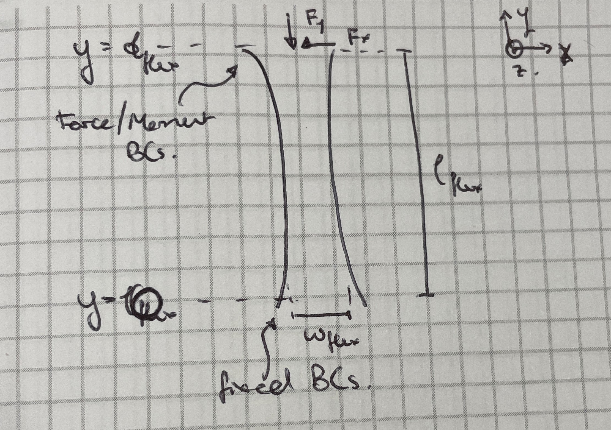
The 5 governing equations for stiffness are second order in displacement and require ten boundary conditions. Variables a, c, and b are defined by the problem geometry. Moreover, we have a relationship between \(F_{cut}\)/\(F_{rad}\) and the cutting depth and feed rate. This is nominally given by the Kienzle-Victor equation for mild steel (our cutting condition) [8]. Note that this is an empirical relationship and thus no derivation provided.
\begin{equation} F_{cut}(f, a_p) = 982.2 \cdot f^{0.592} \cdot a_p^{1.094} \label{eq:Fc} \end{equation} \begin{equation} F_{rad}(f, a_p) = 238.0 \cdot f^{0.443} \cdot a_p^{-0.121} \label{eq:Fp} \end{equation}Where f is feed rate in mm/rev and \(a_p\) is depth of cut in mm. The output force is in Newtons.
We have equations and boundary conditions, and we can solve them. First, we will solve these for a range of reasonable feed rates, cutting depths, and \(a\) values. We will also consider a simulation of a worst case death cut of depth 1 cm. The nominal values for b and c for these simulations will be; 101.88 mm and 115.01 mm respectively. The variable \(a\) will change as a function of time and will be calculated as \(a(t) = l_{part} - t \times f\). This means that with a given part length, feed rate, and cutting depth we have a fully defined set of boundary conditions. Note also that the width and length of the CRF are not fixed, however the depth of the CRF given at 1".
The Timoshenko beam theory derived above uses \(x\) as the axial coordinate. For the CRF, we reorient ourselves so that \(y\) is axial, \(x\) is transverse, and \(z\) is out of the page.
With no distributed loads (\(f_x = f_y = f_z = m_x = m_z = 0\)), and \(F_z = 0\) at \(y = l_\text{flex}\) and \(\partial_y F_z = 0\), we have \(F_z = 0\) everywhere. This gives \(w_z = 0\) and \(\theta_x = 0\) for all \(y\). The system reduces to:
\begin{align*} EA\frac{d^2 w_y}{dy^2} &= 0, \\[4pt] EI_{zz}\frac{d^2\theta_z}{dy^2} &= -GA_x\!\left(\frac{dw_x}{dy} - \theta_z\right), \\[4pt] GA_x\!\left(\frac{d^2 w_x}{dy^2} - \frac{d\theta_z}{dy}\right) &= 0 \end{align*}From the constitutive relations, \(F_x = GA_x(dw_x/dy - \theta_z)\) is constant (no distributed \(x\)-load) and is equal to its tip value \(F_x = 0.27\,F_\text{rad}\), thus we get:
\begin{equation} EI_{zz}\frac{d^2\theta_z}{dy^2} = -0.27\,F_\text{rad}. \label{eq:theta_ode} \end{equation}Integrating \(EA\,d^2w_y/dy^2 = 0\) twice gives \(w_y(y) = C_1 y + C_2\). Applying the boundary conditions, \(w_y(0) = 0\) gives \(C_2 = 0\), and \(EA\,dw_y/dy\big|_{l_\text{flex}} = -F_{y,\text{CRF}}\) gives \(C_1 = -F_{y,\text{CRF}}/(EA)\). The axial displacement is therefore \(w_y(y) = -F_{y,\text{CRF}}\,y/(EA)\), giving tip shortening \(|w_y(l_\text{flex})| = F_{y,\text{CRF}}\,l_\text{flex}/(EA)\) and axial stiffness:
\begin{equation} \boxed{k_y = \frac{EA}{l_\text{flex}} = \frac{E\,w_\text{flex}\,d_\text{flex}}{l_\text{flex}}.} \label{eq:stiffness_ky} \end{equation}Integrating \eqref{eq:theta_ode} once:
\[ EI_{zz}\frac{d\theta_z}{dy} = -0.27\,F_\text{rad}\cdot y + C_1. \]Applying the free-end condition \(M_z(l_\text{flex}) = 0\):
\[ -0.27\,F_\text{rad}\cdot l_\text{flex} + C_1 = 0 \quad\Rightarrow\quad C_1 = 0.27\,F_\text{rad}\cdot l_\text{flex}. \]The bending moment diagram is therefore:
\[ M_z(y) = 0.27\,F_\text{rad}(l_\text{flex} - y), \]Which satisfies \(M_z(l_\text{flex}) = 0\) and \(M_z(0) = 0.27\,F_\text{rad}\,l_\text{flex}\), consistent with the applied load. Thus:
\[ \frac{d\theta_z}{dy} = \frac{0.27\,F_\text{rad}}{EI_{zz}}\,(l_\text{flex} - y). \]Integrating and setting \(\theta_z(0) = 0\):
\begin{equation} \boxed{ \theta_z(y) = \frac{0.27\,F_\text{rad}}{EI_{zz}} \!\left(l_\text{flex}\,y - \frac{y^2}{2}\right). } \label{eq:sol_thetaz} \end{equation}Using \(dw_x/dy = \theta_z + 0.27\,F_\text{rad}/(GA_x)\) and integrating with \(w_x(0) = 0\):
\begin{equation} \boxed{ w_x(y) = \frac{0.27\,F_\text{rad}}{EI_{zz}} \!\left(\frac{l_\text{flex}\,y^2}{2} - \frac{y^3}{6}\right) + \frac{0.27\,F_\text{rad}}{GA_x}\,y. } \label{eq:sol_wx} \end{equation}The tip transverse deflection and transverse stiffness are:
\[ w_x(l_\text{flex}) = \frac{0.27\,F_\text{rad}\,l_\text{flex}^3}{3\,EI_{zz}} + \frac{0.27\,F_\text{rad}\,l_\text{flex}}{GA_x}, \] \[ k_x = \frac{0.27\,F_\text{rad}}{w_x(l_\text{flex})} = \frac{1}{\dfrac{l_\text{flex}^3}{3\,EI_{zz}} + \dfrac{l_\text{flex}}{GA_x}}, \]The stresses along the beam are:
\[ F_y = -F_{y,\text{CRF}},\quad F_x = 0.27\,F_\text{rad},\quad M_z(y) = 0.27\,F_\text{rad}\,(l_{flex}-y),\quad F_z = M_x = M_y = 0. \]Thus, our maximum Von Mises stresses are given by (shear stress is assumed zero as axial stress dominates):
\begin{equation} \boxed{ \sigma_\text{VM}^\text{max} = \left|\, \frac{F_{y,\text{CRF}}}{w_\text{flex}\,d_\text{flex}} + \frac{1.62\,F_\text{rad}\,l_\text{flex}} {d_\text{flex}\,w_\text{flex}^2} \,\right| \leq \sigma_\text{fatigue} = 96.5\ \text{MPa}. } \label{eq:crf_vm_max} \end{equation}These equations together define the feasible design space in \((w_\text{flex},\,l_\text{flex})\).
Using the closed-form expressions from above, the design space was explored by sweeping over the two free geometric parameters \(w_\text{flex} \in [0.01,\,0.15]\) and \(l_\text{flex} \in [0.3,\,1.4]\) at the worst-case load condition (\(f = 0.30\) mm/rev, \(a_p = 2.0\) mm, \(a = 51\) mm). The three quantities of primary interest were the peak von Mises stress \(\sigma_\text{VM}^\text{max}\), axial stiffness \(k_y\), and transverse stiffness \(k_x\) (See Fig. 6).
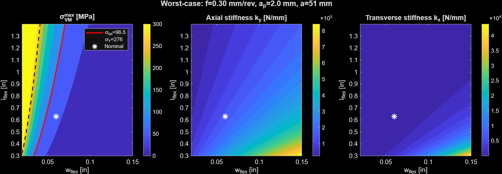
The stress map shows that the feasible region is bounded on the right by the fatigue contour at \(w_\text{flex} \approx 0.05\) in, above which the bending stress exceeds the fatigue limit under worst-case loading. The nominal design point sits comfortably within this feasible region. Axial stiffness \(k_y\) increases with \(w_\text{flex}\) and decreases with \(l_\text{flex}\) as expected, reaching ∼\(1.1 \times 10^6\) N/m at the nominal point. Transverse stiffness \(k_x\) is dominated by the cubic dependence on \(w_\text{flex}\) and is relatively insensitive to \(l_\text{flex}\).
To show how the CRF responds across the practical range of cutting conditions at fixed geometry, Fig. 7 shows the peak von Mises stress and deflection as functions of feed rate and depth of cut at the nominal design point.
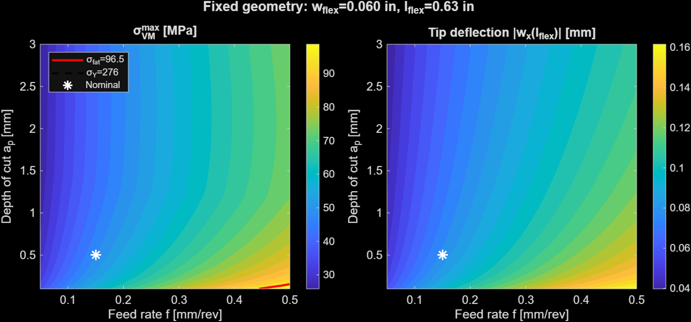
The stress map confirms that the design remains below the fatigue limit across the full range of cutting conditions. Only at the most aggressive feed rates (\(f \gtrsim 0.45\) mm/rev) does the stress approach the fatigue limit, and even then only at large depths of cut. The nominal operating point (\(f = 0.15\) mm/rev, \(a_p = 0.5\) mm) gives a peak stress of approximately 45 MPa, providing a safety factor of roughly 2.1 against the fatigue limit. The six-panel plot in Fig. 8 shows the complete deformation and stress state along the flexure length.
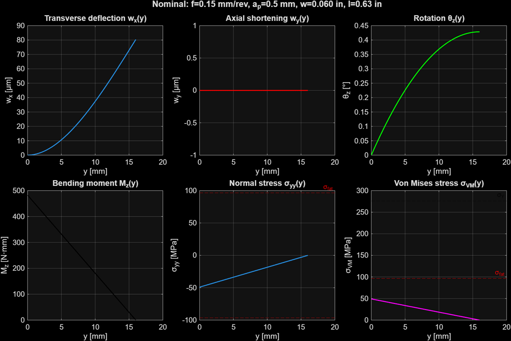
To validate the analytical model and capture any three-dimensional effects not present in the simplified beam theory, a SolidWorks finite element analysis simulation (FEA) was performed on the CRF geometry. The worst-case loading condition was applied, namely, an axial compressive force of \(F_{y,\text{CRF}} = 189\) N distributed over the top face, and a transverse force of \(0.27 \times F_\text{rad} = 29\) N applied at the same face (see Fig. 9).
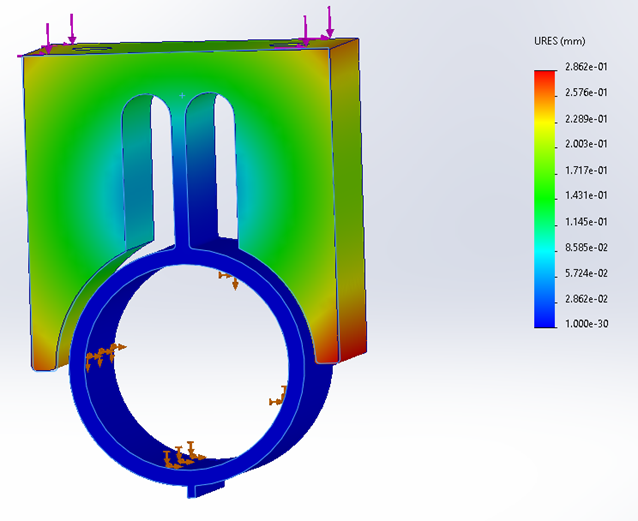
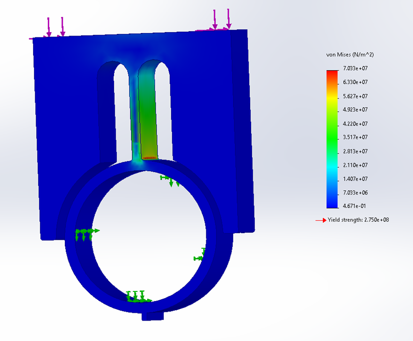
The FEA results are in agreement with the analytical model. The peak von Mises stress from the FEA is 70.3 MPa, compared with the analytical prediction of approximately 70 MPa. The stress concentration at the blade root is well captured by the bending-dominated analytical expression, confirming that three-dimensional effects and geometric stress concentrations at the slot corners are minor contributors to the peak stress for this geometry. The maximum FEA displacement of 0.286 mm is also consistent with the analytical tip deflection.
The derivation in Section 3 rests on Assumption 1: that slopes are small, so the exact curvature can be approximated as \(\kappa_z \approx d^2w_x/dy^2\). In this section we relax this assumption by retaining the geometrically exact curvature expression and deriving the weakly nonlinear correction to the tip deflection. This allows us to quantify the error introduced by the linearisation as a function of applied load.
The exact curvature of the deformed beam centreline in the \(xy\)-plane is [4]
\begin{equation} \kappa_z^\text{exact} = \frac{d^2 w_x/dy^2} {\left[1 + \left(dw_x/dy\right)^2\right]^{3/2}}. \label{eq:exact_curvature} \end{equation}Denoting \(w' = dw_x/dy\) for compactness, we expand the denominator for small slopes using a binomial series:
\[ \frac{1}{\left(1 + w'^2\right)^{3/2}} = 1 - \frac{3}{2}w'^2 + \mathcal{O}(w'^4), \implies \kappa_z^\text{exact} = w''\!\left(1 - \frac{3}{2}w'^2\right) + \mathcal{O}(w'^4 w'') \]Where \(w'' = d^2w_x/dy^2\). The linear theory retains only the \(w''\) term; the weakly nonlinear theory retains the \(-\frac{3}{2}w'^2 w''\) correction.
Substituting the above relation into the moment-curvature relation \(M_z = EI_{zz}\kappa_z\) and using the moment expression \(M_z(y) = 0.27\,F_\text{rad}(l_\text{flex} - y)\) from the force analysis, the governing ODE becomes:
\begin{equation} EI_{zz}\,w''\!\left(1 - \frac{3}{2}w'^2\right) = 0.27\,F_\text{rad}\,(l_\text{flex} - y). \label{eq:nonlinear_ode} \end{equation}We seek a perturbation expansion \(w_x = w_x^{(0)} + \epsilon\, w_x^{(1)} + \mathcal{O}(\epsilon^2)\), where \(\epsilon\) is a small dimensionless parameter defined by
\[ \epsilon = \frac{3}{2}\left(\frac{dw_x^{(0)}}{dy}\bigg|_{y=l_\text{flex}}\right)^2, \]At zeroth order (\(\epsilon^0\)): The linear problem, whose solution is
\[ w_x^{(0)}(y) = \frac{0.27\,F_\text{rad}}{EI_{zz}} \!\left(\frac{l_\text{flex}\,y^2}{2} - \frac{y^3}{6}\right) + \frac{0.27\,F_\text{rad}}{GA_x}\,y, \]As derived in \eqref{eq:sol_wx}. The tip slope of this solution is
\[ w_0' \equiv \frac{dw_x^{(0)}}{dy}\bigg|_{y=l_\text{flex}} = \frac{0.27\,F_\text{rad}\,l_\text{flex}^2}{2EI_{zz}} + \frac{0.27\,F_\text{rad}}{GA_x}. \]As first order (\(\epsilon^1\)): Substituting \(w_x = w_x^{(0)} + w_x^{(1)}\) into \eqref{eq:nonlinear_ode} and collecting first-order terms gives
\[ EI_{zz}\,w_x^{(1)''} = \frac{3}{2}\,EI_{zz}\,w_x^{(0)''}\!\left(w_x^{(0)'}\right)^2. \]The right-hand side is a known function of \(y\) through the zeroth-order solution. This ODE is subject to the same homogeneous boundary conditions as the linear problem: \(w_x^{(1)}(0) = 0\) and \(M_z^{(1)}(0) = M_z^{(1)}(l_\text{flex}) = 0\). Integrating twice with these conditions gives the first-order correction to the tip deflection:
\[ \Delta w_x^\text{NL} \equiv w_x^{(1)}(l_\text{flex}) = \frac{3}{2}\int_0^{l_\text{flex}} (l_\text{flex} - y)\,w_x^{(0)''}\!\left(w_x^{(0)'}\right)^2\,dy, \]This can be evaluated analytically by substituting the explicit forms of \(w_x^{(0)'}\) and \(w_x^{(0)''}\).
To compare with the linear result, the fractional error in tip deflection due to linearisation is:
\begin{equation} \eta = \frac{\Delta w_x^\text{NL}}{w_x^{(0)}(l_\text{flex})} \approx \frac{3}{8}\left(w_0'\right)^2, \label{eq:eta_approx} \end{equation}Where the approximation holds when the shear contribution to tip slope is small relative to the bending contribution. Evaluating at the nominal operating condition defined above gives us:
\[ w_0' \approx \frac{0.27 \times 29 \times (16.0 \times 10^{-3})^2} {2 \times 68.9 \times 10^9 \times 2.13 \times 10^{-11}} \approx 7.6 \times 10^{-3}\ \text{rad}, \]giving a fractional error of
\[ \eta \approx \frac{3}{8}\left(7.6 \times 10^{-3}\right)^2 \approx 2.2 \times 10^{-5} \approx 0.002\%. \]At the worst-case cutting condition (\(f = 0.30\) mm/rev, \(a_p = 2.0\) mm), \(0.27\,F_\text{rad} \approx 42\) N, which increases the tip slope by approximately 45% to \(w_0' \approx 1.1 \times 10^{-2}\) rad, giving \(\eta \approx 4.6 \times 10^{-5} \approx 0.005\%\).
Thus, the geometric nonlinearity introduces a fractional error in tip deflection that is less than 0.005% across the entire operating envelope. This confirms that Assumption 1 is justified; the CRF operates well within the small-angle regime, and the linear model is good enough. The result is physically intuitive as the tip slope of order \(10^{-2}\) rad means the flexure deflects through less than \(0.6^\circ\) even at the worst-case load.
The CRF was manufactured by water jetting the outline and then drilling and tapping two holes on the top surface so that it can be bolted to the carriage. This came with two main difficulties. Firstly, the flexure width was a critical dimension and as such the waterjet needed to cut precise dimensions. This required calibrating the waterjet nozzle to accommodate for the kerf and taper when cutting the piece, as well as moving the insertion points into the metal to non-critical locations. Secondly, a frame was placed around the CRF to allow for fixturing in a vice to enable the drilling and tapping operations (See Fig. 10).
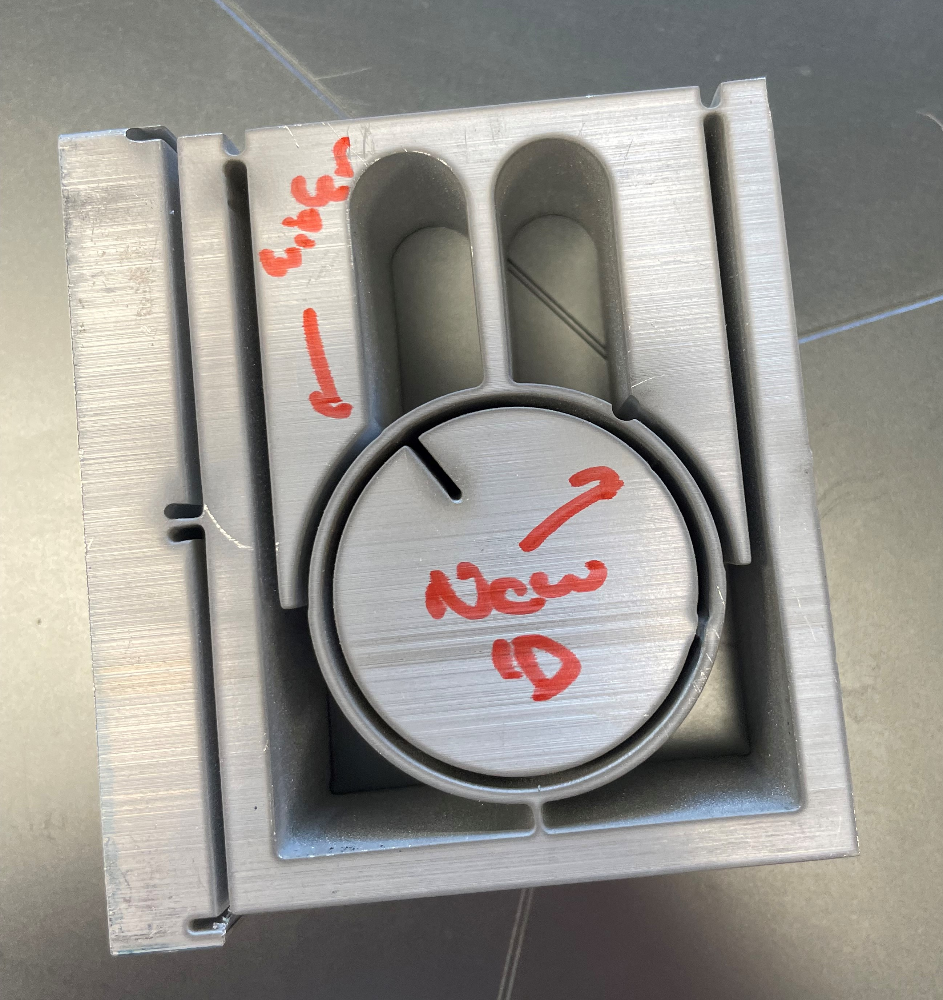
Following successful manufacture of the corrected CRF, the flexure was subjected to a series of informal but severe mechanical tests to verify that it behaves as intended. No failures, permanent deformations, or visible damage were observed in any of these tests. General operations testing. The CRF was installed in the lathe and operated through a range of cutting conditions including turning and threading passes on aluminium and mild steel stock. The carriage traversed its full range of travel repeatedly without any evidence of binding, fatigue cracking, or loss of stiffness. Death cut test. A deep roughing cut was taken at \(a_p = 10\) mm depth of cut, which is well beyond the nominal operating envelope and corresponding to cutting forces substantially above those used in the design analysis. Drop test. The assembled carriage was dropped from a height of approximately 1 m onto the floor, applying a sharp impulse load to the guide rod and hence the CRF. The flexure survived without visible damage. Hammer test. The spindle was struck axially with a hammer. Applying a transverse impulse in the stiff direction of the CRF. No permanent deformation or fastener loosening was observed. Taken together, these tests establish that the CRF performs as intended across a range of loading conditions from well below to well above its design operating point. The absence of any failure mode is consistent with the analytical and FEA predictions.
This project developed a complete analytical model for the carriage rail flexure of the lathe, going from a FBD of carriage forces, into a Timoshenko beam bending derivation yielding a governing ODE, to closed-form expressions for axial stiffness, transverse stiffness, and peak von Mises stress as functions of the geometric parameters. These results were then tested in simulation and in reality.
At the selected geometry (\(w_\text{flex} = 0.060\) in, \(l_\text{flex} = 0.63\) in), the axial stiffness is \(k_y \approx 1.1 \times 10^6\) N/m and the worst-case peak von Mises stress reaches approximately 70 MPa, giving a nominal fatigue safety factor of 2.1. The SolidWorks FEA result of 70.3 MPa agrees with the analytical prediction. The use of Timoshenko rather than Euler–Bernoulli theory is justified by the flexure aspect ratio: the shear correction accounts for approximately 15% of the total tip deflection at the nominal geometry, an error that would be significant in a machine. The geometric nonlinearity analysis confirms that the corresponding modelling assumption introduced a very small error across the operating conditions, validating the linear modelling assumptions. Future work could extend this modelling by considering even higher stress conditions where the non-linear terms could become significant. Moreover, the generality of this derivation provides a strong foundation for applying these analyses to more complex geometries such as the Dancing Queen or other critical parts of the lathe which require precise modelling.
If the derivation above doesn't display, open the PDF directly.
If the derivation above doesn't display, open the PDF directly.
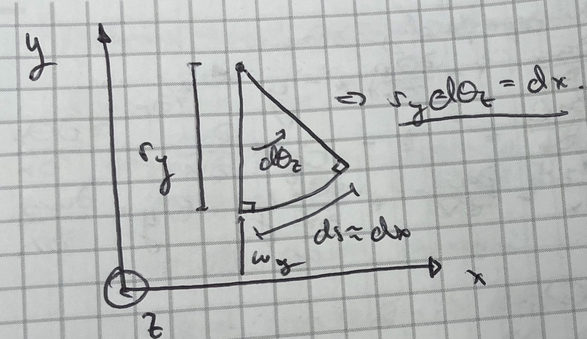